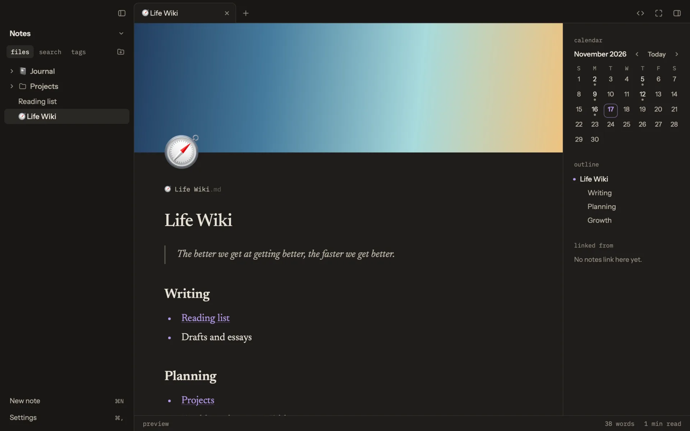
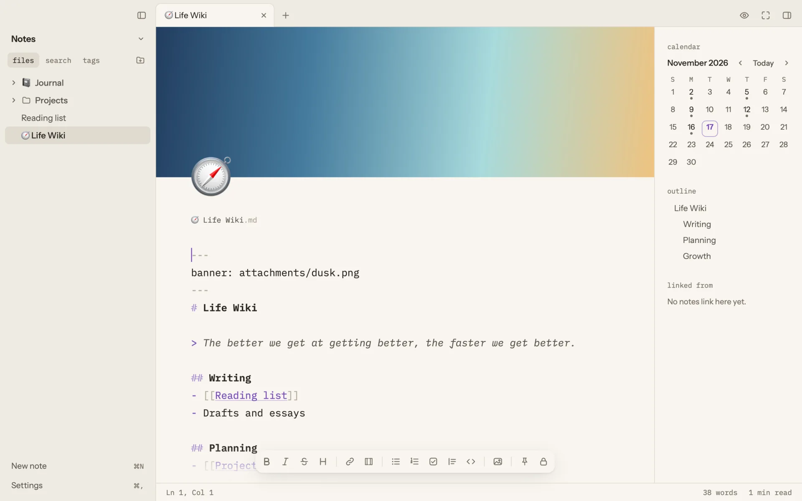
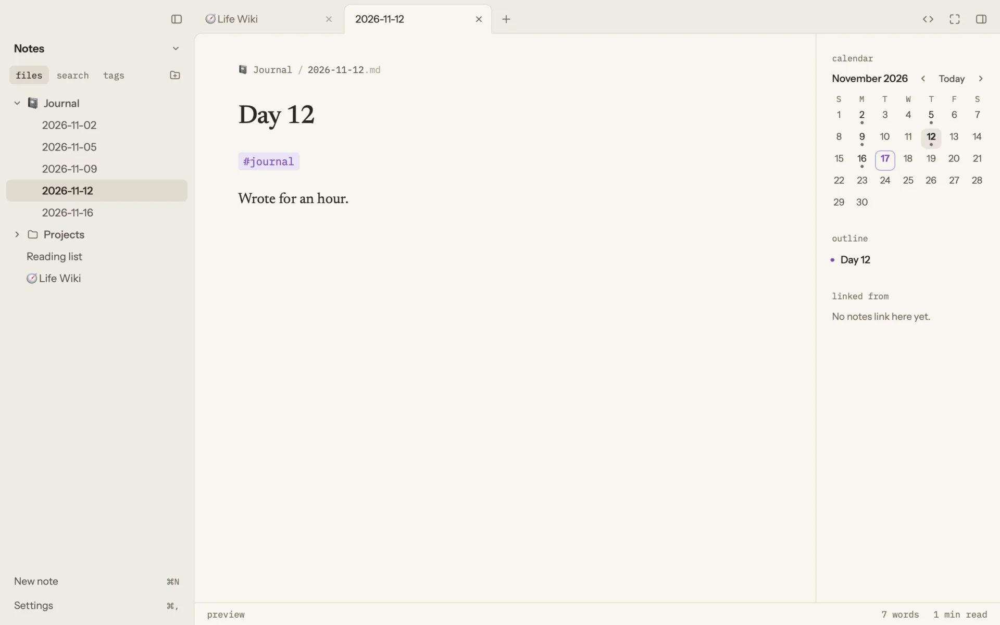
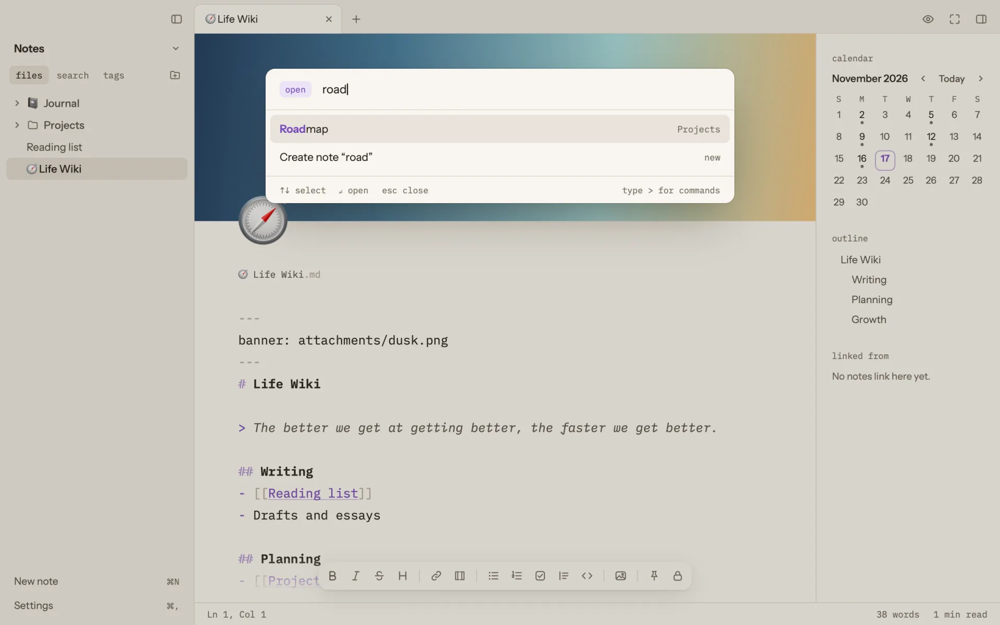

Zotebook opens a folder and edits the Markdown in it. No database, no import step, no lock-in. Every note is a .md file on your disk that any other app can open, today and in twenty years.
macOS · Linux · Windows · free and MIT licensed

Plain files don't have to look plain. Zotebook adds the touches you'd expect from a notes app, and still keeps every one of them in the Markdown.
Hover over a note's name and choose Add icon or Add banner. The icon is an emoji at the start of the file name, so the file tree shows it too. The banner is an image copied into attachments/ and kept in the note's front matter.

The calendar above the outline puts a dot under every day that has a note, and a ring around today. Click a day to open its entry, or to start one: it lands in Journal/2026-11-17.md, ready to type.

⌘O opens any note by a fuzzy name. ⌘P runs any command. ⌘⇧F searches every note, and tags like #idea get their own list.

Source mode highlights Markdown as you type, in a monospaced font. ⌘E flips to a preview that reads like a printed page, and preview stays on as you move between notes.
Write [[Note name]] and follow it. A link to a missing note makes the note, renaming a note rewrites the links to it, and the outline shows what links here.
Bold, headings, lists, tasks, quotes, code and images from a floating toolbar. Rich text you paste from the web turns into clean Markdown.
A note named after its folder, like Projects/Projects.md, is the folder's page. Click the folder's name to open it; the chevron opens the folder.
Lock any note with its own password. It's encrypted with AES-256-GCM on disk and in sync, and shows nothing until you unlock it.
⌘. hides everything but the text, dims the other paragraphs, and keeps the line you're typing near the middle of the screen.
There's no Zotebook cloud. Your notes go to a bucket or a Git repository that you control, in an open, documented format, encrypted if you want.
Amazon S3, Cloudflare R2, Backblaze B2, Hetzner, Azure, Google Cloud, MinIO and more. When two devices edit the same note, both versions are kept.
A notes folder that's a Git repo commits, rebases and pushes with the credentials you already have.
Claude Desktop, Cursor and other MCP clients can read and search your notes. Read-only by default, with a switch for every tool and folders you can hide.
Download Zotebook for your computer. It updates itself when a new release is out.
Zotebook is in preview. The macOS app isn't notarized yet: right-click it and choose Open the first time.
Coming from Quire? Zotebook moves your settings over on first launch.